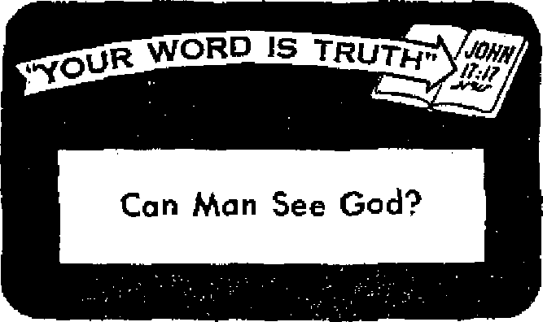
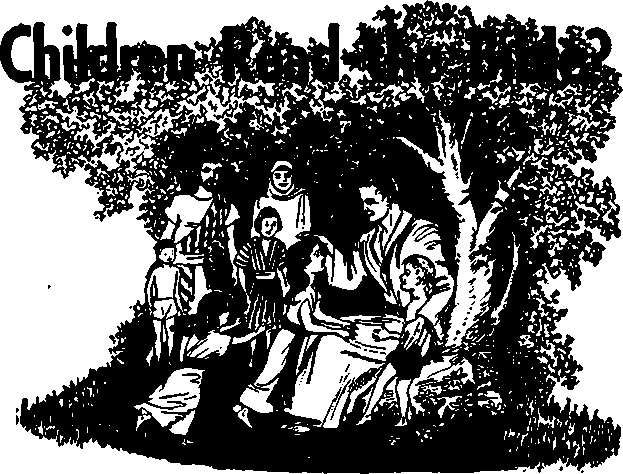

Monthly editions ««t half tto ikm nftt


How does God view them?
Six thousand students seize the schools
Determinism collapses, free will remains
Do you have even*a moment to call your own?
JANUARY 22, 1957 semimonthly
THE MISSION Of THIS JOURNAL
News sources th^t are able to keep you awake to the vital Issues of our times must be unfettered by censorship and selfish interests. “Awake I” has no fetters. It recognize* facts, faces facte, la free to publish facta. It te net bound by political ambitions or obligations; It la unhampered by advertisers whose toes must not be trodden on; Lt le unprejudiced by traditional creeds. This Journal keeps Itself free that it may speak freely to you. But it does not abuse its freedom* It maintains integrity to truth
“Awake I” uses the regular news channels, but is not dependent on them, its own correspondents are on all continents, in scores of nations. From the four comers of the earth their un censored, on-the'scenes reports Come to you through these columns. This Journal’s viewpoint is not narrow, but is international It is read in many nations, in many languages, by persons of all ages. Through ite pagetf many field? of knowledge pass in review—government, commerce, religion, history, geography, science, social conditions, natural wonders—why, its cover* age is as broad as the earth and as high as the heavens.
“Awake P pledges itself to righteous principles, to exposing hidden foes and subtle dangers, to championing freedom for all, to comforting mourners and strengthening those disheartened by the failures of a delinquent world, reflecting sure hope for the establishment of a right’ eous New World.
Get acquainted with “Awake I** Keep awake by reading “Awake!”
Published Semimonthly by
WATCHTOWER BIBLE AND TRACT SOCIETY OF NEW YORK. INC.
117 Adams Street, Brooklyn 1, New York, U. S. A.
N. H, Kkou, ProsWent Gbakt SuMi, Secretary
Printing this Issue: 2,050,000
(Rl)ar tanoupH tn ">wb!" J« publlth^: SMlmmtkty-^Afrtkiine, Finnish, French, German, <?reefe. Eollemilsi], Iulian, MutwiUil tfpanUii. Bvndlsh.
XtotMl/-—Itonlab. Japanese, Poctnitiiie, Ukrainian.
Yearly eubierfpUon rtlrt QVMf ter Knriarontmr fflfiUau
America, 117 Adasu St, BrtwliJyti 1, NX |1 AwJriJJk IX Barwford Bd.. Str sth held, N.S.W. 8/-Cuaria, 150 BrlriKBland Are., Toronto Itf, Ont. fl EBfJJUoiL 34 Crum Tbttm*, Louden W. 2 7/-
Niv Inland, G.P.G. Boi 30. Walllirtton, C, 1 7/-S«tb Africa, Prtau Ras, Elanftfontaiii, tri. 7/-
Fiva cants a copy
fUmlttaneea ahould be sent t* dflu la your country1 la Compliance will! rtSUtatlOaf tff fUHaatar ■ata delfien of money. JtomltixicEs an at
Brooklyn from countrtffl when no o®ce la Incuad, by Inwmatlonil nunw orta only. Subaerlptivn rua In glffermt enuntriw are tart attbti to Jrea] currency Nntla of eiflraftas (with rww! blank* ia sent at lean two tauae before atAWtrlpUm expire!. Change al Mdrta when seat to our office mu be tspofUd etrecdrw wfttrln m okideK Smil your old m well aa now addreaa.
Entered U «fcond-<lt® utter at Brooklyn, N,Y.
Ptfotod In U.S.A
Monthly editions ««t half tto ikm nftt
CONTENTS
Juvenile Delinquency Leads to
Small Business Fights for Survival
Do You Have Freedom of Choice?
Bigness in the Automotive Industry
Education for Women in Indonesia
'Tour Word Is Truth”
Jehovah's Witnesses Preach in All
a Christian minister meets in going from door to door is: "I’m sorry, but I’m just too busy today.” The person who says that may actually mean it, for today we are so busy that we think we just do not have time for anything else. But what keeps us so busy? Where does all our time really go?
In many lands the work week has been cut from 75 to 85 hours to 60, then to 50, and now to 40 or less. In the United States it has been cut in half during the past century. Where does ail that extra free time go?
' The farmer’s tractors, harvesting machines and other equipment enable him to enjoy far more production per man-hour. Yet he has less time. Many housewives have automatic washing machines, dishwashers, vacuum cleaners or other laborsaving devices that their mothers or grandmothers never had. Yet many of them can hardly find a minute to call their own. Where does their time go?
An article in Business Week magazine said: “Never have so many people had so much time on their hands—with pay —as today in the United States.” But where does all this time go? If we have so much time, why are we always so busy?
We are so busy because the greater production that makes the shorter work week possible has also enabled us to buy more things that take up our new-found leisure time. The man
who did not have an automobile did not spend time riding in it. The man who did not have a TV set did not spend time looking at it. The man who had never seen moving pictures did not spend time watching them. The problem of time today does not so often concern getting the necessities of life as it does using the things we have bought to occupy our leisure time. That is where our time goes.
The man who has fishing rods wants to use them, the man who has a do-it-yourself home workshop wants to make things, the man who has a nice lawn wants to take care of it. We are so busy with nonessentials, we work so hard at leisure, and the time-consuming social machine so strongly grasps successful men that we think we have no time for anything. Our modem conveniences are great blessings, but nonessentials enslave us in meaningless motions that hold us back from the really vital activities.
The Industrial Revolution gave us more time for leisure, but promptly filled that leisure with more possessions to occupy
JANUARY 82, 1951
our time. Will it eventually reach the point where we shall not even have time to eatf
Do not scoff at that suggestion. People already are so busy with such things as painting the house, making a new set of book ends, watching comedians and reading the Sunday papers that they reject food even now! The Christian minister who finds that the most frequent response is: “I’m sorry, I’m just too busy,” came with spiritual food. But the householder was too busy to eht.
Do not think that this is stretching the point. Jesus said: “Man must live, not on bread alone, but on every utterance coming forth through Jehovah’s mouth?* (Matthew 4:4, New World Trans.) Job said: “I have treasured up the words of his mouth more than my necessary food?’ (Job 23:12, Am. Stan. Ver.) The person who refuses these words from Jehovah’s mouth is refusing what is more necessary than even material food. He is starving himself spiritually.
And the man who, after hearing the truth, will not take time to teach it to others is also refusing to recognize the right kind of food. Jesus said: “My food is for me to do the will of him that sent me and to finish his work?’ (John4:34, New World Trans.) That is the vital thing. The man who really wants to accept that food will indeed make the time to do so!
How do we know that he will? Because whatever a man wants most to do, he does. If he wants a sweetheart, he will find time for her. If he wants children, he will find time for them. If he wants a home, he finds time for it. If he wants material things, h e takes the time to get them. If he likes particular comedian, or sport, or social activity, he finds time for it. Whatever he puts first he finds the time to do. If he really wants God’s blessing and the food that leads to life, he will make time for it.
It is not that there is anything wrong with these other interests if they are properly engaged in, but they must not take an undue amount of time and certainly none from our responsibilities to God. Some people call on God only in an emergency. Otherwise they have no time for him. But if you are too busy to listen to God, then why should he, who is running the universe, have time for you? Remember that even many of those who say they have ‘prophesied in Jesus’ name, and expelled demons in his name, and performed many wonderful works in his name,’ will be told by him: “I never knew you at all?* —Matthew 7:22, 23, New World Trans.
The Christian minister calling on today’s busy people will tryxto make his presentation so interest-arousing that they will want to take the time to listen. If, as a householder, you have someone come to your home to help you gain the spiritual food that leads to life, recognize the importance of listening and learning and of accepting that way of life.
Then, everyone who has heard the message of truth must make wise use of his time, “buying out the opportune time" that remains. (Ephesians 5:16, New World Trans.) By doing this, no more will you be too busy to listen or to preach to others, but you will be eager for knowledge and eager to put it to use in God’s service. Then you will still be busy, but this time with the most important thing—with knowledge add study and service—taking the only course that really does lead to Jehovah God’s favor and to everlasting life.
AWAKE.1
ARE NUNS
Endtt c| tat?
W*'« Ao“*
the Roman Catholic Church today there are some 575,000 nuns. These are divided into three hundred different orders. Almost ninety percent of these are "active” nuns. These, while living in a convent, serve outside as nurses, schoolteachers and as solicitors of funds. The rest, some 61,000, are termed "contemplative” nuns. These devote their lives to prayer and fasting and other forms of penance for the benefit of others who neglect these things.
In both the parochial and the secular press the nuns are often termed "brides of Christ.” They are viewed as heaven’s favorites and benefactors of mankind. Concerning them priest Cinder, one of the editors of the Catholic paper Our Sunday Visitor, says: "The Catholic Church throughout the world would be seriously crippled without the help of her nuns. They are the present-day counterpart of the holy women who ministered to Jesus and the Apostles.”
And says another priest in the Catholic Digest, May, 1950: "Who in all the world has more influence than a contemplative nun; influence with God by her prayerf and over men by her example ?” One of these nuns, in her book My Beloved, published in 1955, claims that the contemplative life of the Carmelite nun is the happiest as well as the holiest possible on earth.
Do these nuns find their counterpart in the women that ministered to Jesus and his apostles? Do they Shave more influence with God and over men than do any others? Is their life the happiest and holiest possible on earth ? Are they proper-. ly termed the "brides of Christ”? p* Before answering these questions in the light of the facts, reason and God's Word, let us first note what kind of lives they lead.
A Nun’s Life
Each order of nuns has its own distinctive habit or costume and esjjecialiy are their wimpels or bonnets distinctive. Colors also vary; some habits are black, otherf white, red, blue, brown or gray. Names are also distinctive: "The Daughters of the Holy Ghost”; "The California Institute of the Sisters of the Most Holy and Immaculate Heart of the Blessed Virgin Mary”; "Discalced Carmelites of Reformed Order of St. Teresa of Avila”; etc. Rules differ greatly, depending upon the order and the country in which they live.
A candidate for a nun’s life enters the convent as a "postulant.” As a postulant she wears a simple black dress and serves for six months. Then follows a year as a "novice,” after which she takes the vows of obedience, chastity and poverty, at which time she has her hair cut. These vows, first made conditionally, are later made permanently binding, after which only a special dispensation obtained by an appeal to the vicar, bishop or pope himself can release her.
Cannelite nuns spend seven hours daily tn community prayers; they veil their faces from all save their “heavenly bridegroom” Jesus; after several years of probation they receive a gold ring, symbol of their being a bride of Christ; they are termed “discalced” because of being barefoot, that is, wearing only crude sandals.
The Carmelite nun has a bed made of a wooden panel laid upon two wooden horses, and a thin mattress of straw. Her room is bare save for a chair, table, wooden cross and skull. There is also “a skull on their dinner table in the refectory—a constant reminder that death may come at any time.” They “read no metropolitan newspapers or magazines, have no radio or television and eat no meat.” They do penance by denying themselves necessary food, by whipping themselves and by sleeping on a ridged panel, termed by one Catholic publication a “Sure Ticket to Heaven!” This is the life termed the ‘holiest and happiest possible on earth.’
The “active” nun of The Nun's Story. a 1956 best seller, got up each morning at 4:30, ate her meals in silence and stopped tn the midst of whatever she was doing when the bell rang for making devotions. Her superior asked her to fail purposely in her examinations to be a nurse to show humility. Included also were such confessions before others as “I accuse myself of . . , forgetting to kiss the floor . . . when I let the door slam.” Among the forms of penance exacted was the kissing of the feet of the ten oldest nuns.
Time magazine, April 11, 1955, in an eight-page colored feature on convent life, told that “sisters are systematically frustrated by their superiors in the tendency to become identified with a particular job or hobby”; also that “the superior deliberately imposes humiliations to break the natural self-love most Christians take ass matter of course.” It further showed that nuns suffer from such “occupational diseases” as shattering doubt, overscrupulousness and “spiritual dryness/’ when convent life suddenly becomes unbearably drab and boring.
Clearly a nun does not have an easy life and doubtless most nuns do serve in all sincerity. But is sincerity enough? If it were, then the ascetics of pagan religions would gain salvation.
Scriptural Support
Look where we may in the Scriptures, we find no precedent or justification for either monastery or convent life. Nuns today are not the counterpart of the women who accompanied Jesus and his apostles, Those back there did not take vows of poverty, obedience and chastity; they did not confine themselves to a retreat or convent. Neither do we read of these women, nor of Jesus and the apostles, either, for that matter, dressing in a somber costume to advertise their holiness.
Those women back there traveled with the evangelical party as they went throughout all the cities and villages; they vitally contributed something to help advance this preaching work. Rather than soliciting funds as so many nuns do, those women back there, we read, “used to provide for them out of their means.”—Luke 8:3t Cath. Confrat.
Nor is there any word found that Christian women should dedicate their lives to nursing the sick or to teaching school. Such vocations are noble but not part of the Christian’s commission. Neither does the Bible state that a life of contemplation, of praying and of doing penance is the happiest and holiest possible on earth. If that were the case then neither Jesus nor his apostles were very happy and holy, for they led very active, social lives. They mixed so freely with the people whom they taught that their critics found fault, even falsely accusing Jesus of being a “glutton and a wine-drinker.” True, they had time fbr prayer and meditation^ but these were not their goal in life; rather they were aids to realize their goal of preaching the good news of God’s kingdom.—Matthew 11:19, Cath. Confrat.
When the Israelites lost the true spirit of pure worship they fell into the snare of asceticism. So Jehovah, at Isaiah 58:3-5, rebuked them for it, telling them he had no pleasure in their self-denials and their feigned humility. In the apostle Paul's day there were some inclined the same way and so Paul had to write them: “If you have died with Christ to the elements of the world, why, as if still living ih the world, do you lay down the rules: ‘Do not touch; nor taste; nor handle!*—things that must all perish in their very use? In this you follow /the precepts and doctrines of men,’ which, to be sure, have a show of wisdom in superstition and self-abasement and hard treatment of the body, but are not to be held in esteem, and lead to the full gratification of the flesh.”—Colossians 2:20-23, Cath. Conf rat.
Besides, is not penance for sins a denial of the value of Christ’s sacrifice? The apostle John tells us: “If anyone sins, [do penance? no, but] we have an advocate with the Father, Jesus Christ the just; and he is a propitiation for our sins/* Nor can it be claimed that Jesus* sacrifice covers only the sins we were born with, for John here shows that it covers the sins we commit from day to day.—1 John 2:1, 2, Cath. Confrat.
And far from forbidding marriage God’s Word says: “Let marriage be held in honor with all.” (Hebrews 13:4, Cath. Confrat.) In fact, forbidding to marry Is shown to be one of the signs of the great apostasy: “In after times some will depart from the faith, giving heed to deceitful spirits and doctrines of devils, speaking lies hypocrit-icaily, and having their conscience branded. They will forbid marriage, and will enjoin abstinence from foods [such as meat on Fridays}, which God has created to be partaken of with thanksgiving?*—1 Timothy 4:1-3, Cath. Conf rat.
In view of the fact that the course of nuns runs so counter to God’s way in so many respects, not to say anything of doctrinal errors, which space does not permit being examined here, can we for a moment imagine that God would choose them to be brides of Christ ? Certainly not I Nor is that all. Christ does not have many brides. He is not a polygamist. He has only one bride. That one bride is the composite body of spirit-begotten Christians, the congregation of God, the first-born whose names are written in heaven, and limited to 144,000. AH of these, whether male or female, married or unmarried, virgins or otherwise, are spoken of as virgins, standing with their Bridegroom, Jesus Christ, on Mount Zion.—Revelation 14:1, 3. ,
Clearly, convent life with its nuns finds no support in God’s Word. Then from where did it come? From monasticism, which the facts of history show had its beginning in the Orient many centuries before Christ. Asceticism with all its selftorture is the product of a pagan, godless, Oriental, philosophical religion. It teaches that all existence is evil and that man’s most desirable goal Is nirvana, or non? existence. Not accepting God’s inspired Record, it has no explanation for the cause of man’s wretchedness. And not recognizing God’s provision for salvation and life by means of his Son, it has no hope of man’s ever overcoming his unhappy lot. So this pagan philosophical religion concludes that wretchedness and existence are inseparably linked.
The Virgin Companions of the Bride
But return to the picture of Christ and hla bride. Psalm 45 shows that there are yet others, aside from those belonging to the bride/ who are virgins in a figurative sense. After telling of Christ and his bride in glowing terms the psalmist speaks of “the virgins her companions that follow’* Christ’s bride.—Psalm 45:14, Am, Stan, Ver.
Who are these virgin companions of Christ’s bride? They are those termed “other sheep” by Jesus, at John 10:16. They are also the ones the apostle John saw in apocalyptic vision. After describing those comprising the bride of Christ, the 144,000, he tells of seeing “a great crowd, which no roan was able to number, out of al] nations and tribes and peoples and tongues, standing before the throne and before the Lamb, dressed In white robes, and there were palm branches in their hands. And they keep . . . saying: ‘Salvation we owe to our God, who is seated on the throne, and to the Lamb/”—Revelation 7:9, 10, New World Trans.
The facts today Identify these virgins as those who have separated themselves from the unclean harlotlike religious organizations of Christendom, and especially from the unclean organization of Satan, modem Babylon. They keep their virgin state by not becoming friends of this world. (James 4:4) They do not practice pagan asceticism, for they do not hate their own bodies but take proper care of them, so that they can suffer evil as the right kind of soldiers of Jesus Christ.—2 Timothy 2:3.
Neither do these live as recluses, shut off from the world. Rather, like Jesus, his apostles and the women who accompanied them, these "virgins” go throughout the cities and villages preaching the good news of God’s kingdom in all the world for a witness to all nations. (Matthew 24:14) These virgins, together with those of the bride of Christ that still remain, are the holiest and happiest people on earth. Why? Because they are exclusively devoted to the holy God Jehovah and because theirs is a life of giving; and there is more happiness in giving than there is in receiving. —Acts 20:35.
THE WHOLE PLANET IS INVOLVED
The extent to which the whole world is involved in the hazards of modern atomic radiation has not yet dawned upon all people. We have always been exposed to a certain low level of radiations from natural sources, but the extreme care that must now be exercised tn adding to this has been shown in recent reports on studies of radiation dangers. In the United States the National Academy of Sciences said that if radiation problems "are met intelligently and vigilantly” they “need not stand in the way of the large-scale development of atomic energy,” but added that "the continuing need for intelligence and vigilance cannot be too strongly emphasized.” In explaining how the danger would affect the whole world, it said: "It is a long way front Eniwetok to Chicago or Bombay. A power station In Oslo or Moscow is a far remove from Johannesburg. Yet all these places are in the same ocean of air; all are surrounded by the interconnecting oceans of water. English grass has been sprinkled with [radioactive] strontium 90 from Nevada. And English cows have eaten it. Plankton in the North Sea has very likely taken up some of the radioactivity being dumped there from a British atomic reactor. Where did the ocean currents then carry this plankton? What fish ate it? Who ate the fish?” If peaceful atomic developments are not properly controlled, they could be as perilous as the military ones are.

By “Awake!” correspondent in Singapore
ROOPS Out in Effort to Quell Rioters,” screamed a Singapore press headline on the morning of
Friday, October 26, Of particular interest is the fact that juvenile delinquency among school children sparked off the flames of this gigantic conflagration that swept Singapore, leaving in its wake thirteen dead, one hundred and fourteen injured and untold damage to property.
On July 22, 1955, when reporting a previous riot in Singapore we made note of the fact that thousands of students from Chinese high schools were implicated in the disorders. Two schools, the Chinese High School and the Chung Cheng High School, having a combined enrollment of about eight thousand, were primarily involved, After quelling the rioting the government felt compelled to close the schools temporarily because of their active participation in the uprising. Thousands of students went on a sit-down strike until the schools were reopened.
Subsequent talks on self-government between the elected Labour Front party and the Colonial office failed because Britain did not want to relinquish control of internal security in an independent Singapore. The then chief minister David Marshall resigned and the minister for Labour and Welfare,Mr.Lim Yew Hock, tock the office of Chief Minister. Under new leadership of subversive elements in the colony. On September 18 and 19, 1956, five men and two women were arrested, six of whom were detained on banishment orders. Among these were two deans from the Chung Cheng High School. The remainder were trade union officials,
The airests were followed by mass rallies organized by the Singapore Factory and Shop Workers Union, which urged its 50,000 members to go out on a protest strike. Thousands of students from the Chinese schools were reported to have taken part in the mass protest meetings, where the government was denounced for its action against the arrested leaders.
The 3,000-strong Chinese Middle Schools Union began a campaign against the government’s action. This union had been registered on the understanding that it would not meddle in politics, but now the government felt that the rule had been violated and so dissolved the union. The minister for education denounced it as “nothing less than a Communist front organization.” The president of the banned union was arrested and detained under the Preservation of Public Security Law.
Following this action some 3,000 pupils barricaded themselves in the school compounds and held protest meetings in defiance of the law'. Pleas from school committee members, education ministry officials and parents to the children not to
the government began a cleanup campaign hold their illegal meetings fell on deaf ears.
Students Seize the Schools
Principals and teachers found it impossible to control the defiant pupils, which loss of control resulted in the deterioration of what discipline they had been able to maintain. The government then directed its cleanup campaign full blast at the schools. School authorities were given the names of one hundred and forty-two students, who were considered to be “rebel leaders,” to be expelled along with two teachers. Four more student leaders were arrested, among them one young girl on banishment orders.
Meanwhile, four thousand students took complete control of the two schools, organized mass protest meetings, at which they condemned the government and passed resolutions calling for immediate release of those arrested and restoration of the banned students’ union. Principals and teachers were obliged to flee as student leaders took over complete charge of the schools and all authority collapsed.
For two weeks thousands of boys and girls defiantly continued to camp at the schools, where they organized their own classes with self-appointed teachers, held protest meetings denouncing the government and sang Communist songs. By October 12 the number of those encamping at the schools rose to 6,000. Truck loads of food and other provisions came pouring in. Sentries were posted at all gates, not even allowing parents to come in to see their children. Students started preparations, including the making of huge banners, for a protest march on government house.
School authorities failed to carry out the government's ultimatum to restore order and 'so the schools were ordered to be closed. In the meantime the education department opened up reregistration centers where all those pupils from the Chinese schools who wanted to continue their studies could reregister. Some 750 came forward ana classes in other premises were resumed. Pickets from the rebellious schools were sent to the new centers and pupils and parents were warned not to co-operate with the new government policy. Even bus conductors are reported to have reviled the students who had resumed classes.
Tension mounted, following more arrests of those suspected of subversive activities. Groups of students from the two camps began visiting other Chinese schools, took over classes from the teachers and lectured the pupils and encouraged them to go on strike. As a result, students in two more large Chinese schools walked out in protest against the government.
Appeals by the six persons originally detained on banishment orders were rejected by the governor-in-council. A delegation of nine former executives of the dissolved students’ union called on the chief minister with a six-point demand, among which they asked for withdrawal of the order for expulsion of the 142 students, abolition of reregistration and government-sponsored examinations, reregistration of the students’ union, right of assembly in schools and public trial for those arrested or immediate release. The chief minister rejected their demands.
The Police Warn, Then Raid
On October 25, the government issued an ultimatum to the stay-in pupils to clear out of the schools by 8 p.m, or face the consequences. Parents were appealed to to go and collect their children before 8 p.m., as the authorities would not be held responsible for what would happen to pupils after that dead line.
Worried parents rushed to the schools and the police officers offered to go into the compounds and help them find their son? and daughters, but they found all entrances securely locked and barricaded. The police cut a hole in the fence, but only a trickle of pupils left with their parents. Throughout the day while government loud-speakers periodically warned the children to go home peacefully with their parents student loud-speakers from inside the schools blared defiance against the police and urged their parents to defy the authorities.
As the zero hour approached tension at and around the schools began to mount. Thousands of people began converging upon the two schools, where crowds had gathered. First, slogans were hurled against the police on duty and then missiles began to fiy. The police had to use baton charges to disperse the crowd that continued to grow in number and in animosity toward the police. As the crowd broke up it formed into mobs wielding sticks, stones, iron bars and bottles and began attacking passing vehicles, assaulting Europeans and burning their cars. Tear gas had to be fired at the groups of mobsters made up of a few thousand at the Chinese High School. Hooligans overturned police vans and cars and set them on fire.
As darkness fell mobs comprising thousands of rioters, hooligans and students began systematic attack upon police posts. Roadblocks were set up by the mobsters; passing cars were stoned and their occupants assaulted and a number of vehicles burned. A wave of violence like a forest fire spread across the city, leaving destruction and ruin in its wake. Shortly after midnight a curfew was imposed upon the island, which remained in force till 6 a.m.
Friday, October 26, dawned, one of Singapore’s blackest days, with violence aflame in many parts of the island. The 6,000 students still sat defiantly at the two schools. At 7:45 a.m. the police broke down the barricades and swarmed into the school compounds warning the students to disperse. They were met with jeers and boos. Masked police then fired tear gas shells into groups of students, causing thousands of weeping boys and girls to stampede for the exits. In fifteen minutes the operation was over.
The Riots Spread
Bands of the dispersed students then began to join groups of hooligans throughout the city. Buses went off the roads and all public transport came to a halt as many bus workers joined the mobs. Incidents of violence began to pour into the police operations room at such a terrific rate that an island-wide curfew was clamped down at 3 p.m. instead of 6:30 p.m., as previously announced. Thousands of office workers began stampeding to their homes by whatever means of transport they could find in order to avoid becoming curfew breakers. Resulting traffic jams provided the rioters with more opportunities for attacking cars. City council trucks and handcarts, police radio patrol cars, traffic lights and other installations became objects of their violence.
British military units fighting bandits across the channel in Malaya, along with a contingent of police, marched into the city to help restore order. Barbwire and sandbag barricades were thrown up at all main intersections, giving the city an atmosphere of a full-scale war. Mobs defied and assaulted police posts, causing the police to open fire on a number of occasions to prevent being .overwhelmed. Ambulances and fire trucks were stoned while utilized in attending to casualties. The Commissioner of Police estimated that some 25,000 people participated in the rioting, among whom were thousands of school children, bus workers and other unionists, hoodlums and secret-society gangsters.
Five Royal Air Force helicopters were used to spot and report crowds from the air. Thousands of troops in armored vehicles patrolled the streets. Voice aircraft flew overhead warning the public to stay indoors or risk being arrested or shot as curfew breakers. Being forced to retreat from the center of town rioters began attacking police posts on the outskirts of the city.
Peace Restored
Meanwhile, under the protection of the curfew the police began a systematic search for those leaders who were thought responsible for fanning the flames of passion and hatred. Headquarters of some four or five unions were raided, where a number of union leaders and documents were seized. At one union premises the police met severe resistance from a crowd inside armed with iron bars, sticks and
. I
homemade bombs. Tear gas was used to disperse the occupants, among whom police found some children between the ages of six and twelve. Well-known hideouts of secret-society gangsters were raided and a number of gangsters scooped up by the police net Some five hundred people were arrested on various charges of rioting, breaking the curfew or illegal assembly.
Strict curfew enforced for four days put out the flames of violence and bloodshed and normal life once again came to the streets of Singapore. However, the flagrant defiance of all authority shown by both adults and children is bound to lead to further acts of delinquency. This is all just part of the sign that this world is now in its time of the end, as foretold: “Tn the last days critical times hard to deal with will be here. For men win be .. . haughty, ... . disobedient to parents, . . . without self-control, fierce.”—2 Timothy 3:1-5, New World Trans.
SIGN OF A SICK SOCIETY
In an item in New York's Staten Island Advance of September 22, 1956, Colm Brogan points to several popular plays as a sign of a sick society. He writes: *7 profoundly believe that the [Arthur] Miller plays and the Tennessee Williams plays are not only symptoms of a grievously sick society but are also a cause of that sickness. The Street Car, the Glass Menagerie and the Salesman almost frighten me because they remind me of the brilliant films produced in Germany under the Weimar Republic. ... To njy mind the German films and the American plays of Miller and Williams have one thing in common. They were skillful and sometimes a subtle denial of the dignity of man, and it is the recognition of that dignity which is the seal of a free Christian society and is the fundamental reason for that society1 s immeasurable superiority over any form of tyranny. These plays show men and women brought down below the level of humanity, defeated and degraded, not only devoid of hope but also devoid of resistance, without even the nobility of a dignified resignation to Intolerable fate. I have no doubt that the highbrows who went to the select little film academies to see the 'best' German films and the lowbrows who went to the popular theaters to see The Blue Anger were being corrupted unconsciously by a particularly degrading form of sadism, They were almost invited to gloat over human beings groveling and debased. With equal sincerity I believe that the effects of the Miller-Williams school of drama are the same. I accuse neither man of positive intent to do harm, but I do say that their plays make a secret appeal to the vilest of human instincts."
farmer fills out a productionsheet report to show what he has done that day. What to plant, how, when and where to plant are all thought out and dictated
HAT chance has a mouse to defend itself against a raging lion, or a minnow to defend itself from the teeth of a shark? About the same chance that a small farmer or a small business has when competing with gigantic industrial corporations, chain-store monopolies or financial combines that now stalk the earth.
At one time the family farm played a vital role in the health and wealth of a nation. Now we are told that the small farm is on it£ way out, that giant landowners are taking over. These landowners are giant industrial firms and cereal manufacturers. The small farmer, finding it impossible to compete with these giants, is reluctantly selling out to them. In turn the manufacturer hires the farmer to work the farm, only under the manufacturer's supervision. The fanner’s worries are over as far as the farm is concerned. Rising prices and falling markets no longer concern him. He is not troubled with the high price of fertilizer, the wear, tear and care of machinery or bad weather. He is now a hired man and the soil he works means as much to him as does' a punch press to a factory worker. The farmer's hours are set and his wage he gets regularly through the mail. At the close of each day's work the
to him from the head office, which is often located thousands of miles away in a skyscraper office overlooking New York city. While the farmer has seemingly shed many of his worries he, no doubt, has given up much more in the way of the independence, initiative, spirit and freedom that were once his. As an employee he has become just another cold statistic on the giant's financial sheet The joy of personal accomplishment is also lost and the natural attachment that a farmer has for the soil is no longer the same. So great has been the loss of daily farms to giant milk producers; beet, bean and corn growers to chemical companies and food manufacturers, that in some quarters the small independent farmer is being referred to as a has-been.
Small-Town Business Disappearing
Much the same thing is happening to the small businessman, with giant chain stores invading small communities. Big merchants are picking off unsuspecting independents at a rate that is alarming. There have been a record number of failures of small business in the past two years, while incomes of giant corporations keep rising. With the disappearance of the small independent store, the community has slowly undergone a change. Some of
the changin'have been for the better, others for the worse. Perhaps the greatest loss to the ocmmunlty has been the spirit of friendliness and neighborliness that the small businessman inspired.
The small merchant tried his best to be courteous. He tried to remember not only faces, but names as well. “Good morning, George. How are the wife and children?’’ “Fine, Jack. How’s business?” ‘‘Good afternoon, Jake. Did you get your tractor fixed?’’ “Yes. .lack. Thanks for helping me along.” It was this sort of friendly atmosphere that knitted the small community together, that made small-town living a toy. When customers were short on cash it was usually: “Gladly, Mrs. Walters. You can pay me next week.” This the merchant would do despite being short an money himself. His hours were long, Be often spent more time in his store or shop than with hlfi wife and children.
When the giant chains began to move into a community the independent's life and business slowly changed. He was not only forced to compete with lower-prices, but with an entirely different way of doing business. Unlike independent stores, giant chain stores were spacious, and neatly arranged counters, displaying a wide variety, were left open to the Inspection of the customer. Women and men enjoyed their newfound freedom to browse around and select what they wanted without being rushed or high-preasured into buying an item. Glancing over the various counters refreshed the memory of what things were needed at home. To be able personally to select and Inspect a product before buying was another added privilege.
Independents often kept much of their stock behind closed counters and shelves, or fn drawers, and brought a product out only if it was called for. Usually items that the independent preferred to sell for reasons of higher profit or excess stock were offered first Ihsfr stores were often sloppily arranged, dimly lit, musty and unclean. With the giant chains presenting a more appealing store, with greater advantages and a higher standard of efficiency, the independent businessman was forced to take note, reappraise his business and make necessary adjustments, if he desired io stay in business.
The chain manager and clerks are usually trained salesmen with cheerful personalities and a keen eye far business. The store opens and closes with slide-rule precision. "While a manager cannot buy items not on the company's list he may carry Items to ascertain their acceptability with the consumer and, if popular, they are placed on the company’s list cf items from which the store manager may select. Many products ait* on the company’s list because tests and surveys show them desirable.
This tends to alleviate a fault of the independent store, whose owner often was prejudiced or influenced by personal opinion and would arbitrarily reject items without sufficient reason or evidence. Competition between chain-stare buyers is keen. This being so, buyers of big chains canrot remain stagnant, nonprogressive or nonreceptive to new ideas. They are generally salaried employees and should they arbitrarily turn down a good product and it prove to be a success in another chain, or should they lose an opportunity of being early with a new item, it wculd quickly cause them to lose standing with the company and often their jobs.
To stay on top the average chain-store manager does not have the struggle that an independent has. The chain manager has millions of dollars behind him. Actually he has the ability to luin almost every grocer in town. Suppose he were ordered to cut prices on one or two items to give the appearance of a general underselling. The public would thereby be in-ttucea to comr to ms store, weex aner week of this and a small independent is wrecked. He does not have money enough to back him up in a long war of cutthroat competition, so the independent is forced to close shop. Thus the chain has swallowed up another independent. Now the chain is free to raise prices to regain losses suffered during the war.
Group for Survival
The invasion of communities by some giant chains has caused independents to group together for survival. Together they purchase foodstuffs and merchandise and fight back against giant chain operators. Independents are soliciting the help of the fanner, even bullying him, in hopes of dominating the green goods. Groups of independents have purchased their own factories and packing plants in a desperate fight to preserve individual initiative and opportunity.
Some countries have passed laws to protect the small businessman from being swallowed up by giant chain retailers. Chains are limited as to the number of lines of merchandise they can lawfully handle. Other countries have outlawed the giant altogether in an effort to protect the home-town merchant. In recent years chain giants have assumed serious proportions in the United States. While chains represent only 10 percent of the stores in number, yet they do over 30 percent of the business. The world’s largest grocer, the Great Atlantic & Pacific Tea Company, next to uenerai motors, sens mare goods than any other company in the world. Of every dollar the United States spends on food, about ten cents is passed over A & P counters—a massive yearly total of $2.9 billion.
Consumers in small communities are wondering if the few pennies they save and some of the extra privileges they enjoy are worth the price paid in the loss of individual freedom, friendliness, independence, spirit and initiative that were once a part of the small community. Small business shops seemed to breathe life into a community. Many small shops were a symbol of the throbbing of life—evidence of the burning urges that are in men. They were a compliment to the personal ambitions, capabilities and capacities of men who resented being regimented into a life of ordered clerkdom.
Yet under the present system both chain and independent stores have their advantages and place. The greater efficiency of the chains enables people to purchase at a saving. The greater personal attention of the independent supplies the individualistic or specialized needs of the people to a greater extent. Small independents can cater to local trade and personal tastes, while the chains can bring in fresh items tested for practicability, etc. Working side by side to the good of the community, both small independents and chain stores can exist and flourish, if each remains in its assigned place and respects the boundaries of the other.
o'fed ^motions
Last summer a man named Mike Hone spent two scorching hours along the shores of Spirit Lake in Iowa. He was looking for Indian arrowheads. Hone had decided to make a hobby of collecting the flint reminders of the days when the Indian roamed the prairie. He had been told that the shores of Spirit Lake were full of them. But after two hours* searching he found not a single arrowhead. He returned to his automobile. One of his tires was flat. The cause? An Indian arrowhead imbedded in the casing.
DO VOL!
FREEDOM! of CHOIC
ASHIONS ^come and fashions go. Women’s hats that are in style today will be laughed at a few years hence. So too with scientific theories. Many a theory that was unquestioned a generation ago is supplanted today with its complete apposite.
This has been the history of determinism. Determinism is a philosophy that flourished in the nineteenthcentury successes of physics and astronomy in explaining the physical universe. Isaac Newton’s laws of motion, combined with his law of universal gravitation, explained and predicted the orbits of heavenly bodies with amazing success. The movements of the moon and the planets were charted from past records, and they were found to follow Newton’s laws precisely. Applying these laws to their present positions and velocities, astronomers can predict their paths far into the future. We are told just when eclipses will occur and When Mars will pay its next visit.
Laws were also found governing electric and magnetic forces. The wave nature of light was discovered, and,the wave lengths of different colors were measured. The unvarying speed of light through space was timed. James Clerk Maxwell’s theory of electromagnetic radiation unified light and electrical effects. By it the discovery of
DEATH
ra<io waves was foreseen.
In short, physicists sought to write out mathematical equations for the whole physical world. All the relations of matter and waves through gravitational and electrical forces were included. By the end of the nineteenth century they felt flushed with success. Some thought their work was almost finished.
Nothing remained but to measure more accurately the numbers in their equations. With confidence they came to express their belief that in principle, if they knew the dimensions and location and speed of every object in the universe, they could predict all their future movements. That is, the present situation and past history of everything in the physical world completely determined its future.
Chemists ran a close second. They studied the laws of gases and the laws of chemical reactions, and they found that John Dalton’s atomic theory could explain them all. Heat was seen to be simply the movement of atoms. They borrowed thermodynamics from physics and found it would express exactly the energy relations between different chemical forms. It seemed that all they needed was a complete understanding of these laws and the scientist would be able to predict future changes in all substances from their present condition.
Of course, he could never literally know the history of every atom. He simply would never have time or paper enough to write down the facts about all the billions of trillions of atoms. But, in principle, the determinist believed that every atom’s future was charted from its past history by the universal laws of physics and chemistry.
Actually, a way to sidestep the need for detailed knowledge, of each atom was found. Statistical mechanics provided laws about the behavior of very large numbers of atoms. For example, think of a box full of atoms of a gas. They are shooting helter-skelter in every direction, bumping each other and bouncing around in apparent utter confusion. In statistics, you do not have to say that a certain atom in the box has a certain velocity. Rather, you can say there is a certain chance that it has such a velocity. And with millions of billions of atoms in the box, you can say a certain number of them have such a velocity at a given moment. This turned out to be just as useful in predicting the future behavior of the atoms in the box as having the life history of the individual atoms. And it was much more practical, because it brought the problem within the grasp of the human mind.
Although statistics was substituted for exact information, the chemist still believed that all he had done was to invent a shorthand way of writing down the courses of all the atoms in the box on a single sheet of paper. The detailed position and history of each atom were thought to be no less real. With his shorthand summary he could tell the courses of all the atoms, past, present and future.
Determinism Said to Disprove Free Will
The biologists were impressed with the success of astronomers and physical scientists. Many of them began to think about their subject along the line of determinism. Were not living plants and animals also composed of atoms? And were not life processes just chemical reactions? Oh yea, they were very complex reactions, <and only a few of the simplest could be understood at all, but were they not still the same in principle? If the movement of atoms and chemical reactions in inanimate systems could be predicted from their present and past history, why should living things be any different?
Psychologists fanned the flames of spreading deterministic philosophy with their theories of human behavior. Some saw an adult man merely as a complex bundle of conditioned reflexes. As a child he had pulled back from a painful stimulus; as an adult he avoided things that he associated with pain. His experiences determined what things he associated with pain. So, they reasoned, a man reacts to his environment in a way completely determined by his past contact with it. Others argued that behavior was determined by heredity. In any case, the reason a man did or did not do something was not because he decided to or not to. His choice in any situation was just an illusion. What he would do was already determined for him by the character he had inherited from his parents, or by his environment. He was really just a conscious robot.
Sociologists, imitating the physicist's methods of handling atoms, took the statistical approach to predict human behavior. Granted that they could not foretell the response of an individual to a situation, that was only because they lacked the necessary details about his heredity and previous environment. But with large numbers of people, they could predict that a certain number would go this way and a certain number that way. Human society was like a statistical jumble of atoms, a vast organic robot, washed this way or that by the tides of circumstance according to tendencies determined by past history. This was determinism pushed to the extreme of universal application. Your individual choice was swamped in a sea of popular opinion polls. You were just a statistic. You had no more to say about which way you were going than an atom in the box. You were butted this way or that way by your contacts with other atoms, or the box around you.
Of course, there were those who objected on religious grounds. Had not God made man a creature having his own will? Had he not put before man the choice of good or evil, and left him free to choose? Surely there must be some catch in the scientific argument that leaves man with no voice in his own destiny, a helpless creature of his environment.
On the other hand, some religions found their doctrines strangely bolstered by these irreverent dogmas of science. According to the doctrine of predestination, God had predetermined the destiny of every human creature, and no matter whether he was slated for a blissful life of ease in heaven or the endless torments of hell-fire, there was nothing a man could do that would alter his final destiny. While the atheistic scientist would leave God out, yet his picture of a world of people all moving inexorably to their various destinies was very much the same.
Determinism Collapses
But the fashion changed. Around the turn of the century there began a series of discoveries in physics that undermined the whole framework of determinism. From the same field of science that had first supported it came a series of smashing blows that shattered its top-heavy structure and demolished it in a cloud of dust.
First came the discovery of radioactive processes. Take poloniuih, file first new element identified by its radioactivity. Atoms of polonium are unstable. They last for a time, then disintegrate with pn internal explosion. How long do they last? Well, in a given bottle of polonium, half the atoms decay in a period of 140 days. Are the atoms then left any more unstable than when they were younger? No, because if we watch those left, we shall see half of them decay in the next 140 days, and half will still be left. Considering any given atom, you can say that it has an even chance that it will decay In the next 140 days. But is the atom that decays any different from those that persist? No. Right up to the moment of its disintegration it is just like its neighbors, some of whom may outlast it by two or three years. And nothing in the environment causes the decay. In fact, no changes in the environment that man can bring about will either hasten or retard the rate of radioactive decay. It is an internal change, occurring spontaneously, entirely by chance.
Here was the first insight into the statistical laws governing atoms. For the first time man could observe individual atomic events. And he saw that the course of the individual atom was not determined by its past and present Two atoms with exactly the same history could lie side by side. One might explode this very second; the other might last a year. There was no possible way to predict when the end would come. The statistical chances could be figured, and, averaged over millions of atoms, they would be accurate forecasts. But the statistical law was not merely a substitute for limited knowledge of the pedigree of individual atoms. It was a consequence of a fundamental uncertainty in the nature of the atom itself. Radioactive atoms simply violated the principle of determinism.
About the same time the electron was discovered. It was found in all kinds of substances, one of the fundamental particles of which atoms are made. When experiments with radioactive rays showed that the atom had a positive nucleus, Niels Bohr invented a model of the atom in which tyie electrons moved In orbits around the nucleus, like planets around the sun. To account for the wave lengths of light given out by atoms, he had to assume that only certain-size orbits were permitted. This was a strange, even an unnatural assumption, but it worked. All the wave lengths of light in the spectrum of hydrogen atoms were predicted exactly by Bahr’s model.
More experiments with electrons showed a surprising thing. Electrons outside atoms, moving between slits where particles should go in straight lines, actually formed patterns as light waves do. If electrons behaved like waves on the outside, maybe they were like waves inside the atom too. Erwin Schroedinger tried thinking of the electrons bound in an atom as standing waves, like those in a violin string fixed at both ends. He found that this gave exactly the same result as the assumption that Bohr had forced upon his electron orbits. So the wave-mechanics theory of the atom came into vogue.
But now the electrons were no longer little hard specks of electricity traveling in exact circles around the nucleus. Instead, they were smeared out into broad waves. The interpretation put on this is that the electron does not follow a predictable orbit like a planet around the sun, but the strength of the wave represents a sort of time exposure of a more complicated path. Where the wave is strong is where the electron spends a great deal of time. It is thin in places the electron skips over hurriedly. We can no longer pin down the electron to a definite orbit, such as it had in Bohr’s atom. The Schroedinger wave shows the probability of finding it in different places. So electrons too flit about in complete disregard of the dogma of determinism.
Fission of uranium atoms is a striking example of indeterminism in nature. A neutron gets into the nucleus of an atom of uranium-235 and raises it to a high pitch of excitation. Then it pulses for a brief moment before it splits into two parts. This split can go in over a hundred different ways, giving at least that many combinations of radioactive and stable atoms. The probability of different paths of fission have been measured, so that we can say, for example, that 3 percent of the time the uranium will split into a barium and a krypton atom. But in any individual case there is no way to predict which way it will go. Different uranium atoms do not have different histories. One is not predestined to split into a tin-molybdenum pair, and another into a barium-krypton pair. The uranium nuclei are identical before the neutron enters. Neither are different modes of fission caused by the neutron’s striking the atom in different ways. The statistical spread of different kinds of fission fragments does not merely cover up our ignorance of details. Rather, it is a reflection of the fundamental indeterminism that exists in the atom up to the moment of fission.
No Scientific Basis to Oppose Free Will
These few examples might be multiplied many times from present-day physics. In fact, Werner Heisenberg has set forth his Uncertainty Principle as a basic law of nature. According to this law you can never know just where an atom is and just how fast it is moving at the same time. If you try to measure its position more exactly you lose track of its speed, and vice versa.
The uncertainty principle is generally accepted in twentieth-century science. It is just the opposite of nineteenth-century determinism. A closer view of atomic processes has changed basic thinking in physics. The sharp figure of absolute predicta-
bility is gone; in its place we nave only a shadowy outline of probability.
Mechanistic biology and psychology never had any foundation of their own. They were topsy-turvy structures-built with unwarranted assumptions on a foundation of physical and chemical theories. And now that mechanistic theories have been knocked out of atomic science, determinism in biology topples in ruins.
It would not be correct to say that the law of radioactive decay or the wavemechanics theory of the electron proves the existence of free will. But they certainly do spike the arguments of those who would like to prove determinism or predestination from nineteenth-century physics. We know nothing whatever of the kind of atomic or electronic changes occurring in the brain of a man who is thinking or making decisions. Is it possible that the movements of electrons, which are subject only to blind chance in inanimate things, are under voluntary control by a creature who exercises free will? We do not know, but such speculation is not inconsistent wren present smenunc Knowledge. This we do know, that deterministic philosophy is out of step with present scientific knowledge.
To one who reads the Bible with understanding and a reverent regard for its Author, there has never been any doubt on this question of free will. The first man was given the choice to live in a paradise earth or to die. The choice depended on his voluntary response to a simple test of obedience. (Genesis 2:17) The spirit cherub who was to look after him could choose to’continue as an obedient servant or ambitiously to rebel against his Creator. (Ezekiel 28:14) Jesus could choose either to walk in integrity in the true worship of Jehovah or rebelliously to take a short cut to the kingdom offered him by Satan. (Matthew 4:8, 9) Jehovah has set before all his intelligent creatures the choice of life or death. (Deuteronomy 30:19) In this time of crisis before Armageddon the water of life is being offered to all. It is a matter of one’s free will to refuse it or accept it—Revelation 22:17.
BIGNESS IN THE AUTOMOTIVE INDUSTRY
In the August issue oi jiarpers magazine nuoen w. ixeiiry, Jr., discussed the controversy between automobile manufacturers and dealers that had led to the U.S. Congressional investigation of automobile sales. He said that one witness, told the senators that the dealers “were driven by fear” into purchasing from their manufacturers cars that they could not sell profitably. There Was good reason for their fright, Kelley said, pointing out that “this year, the number of makes has dropped to fifteen, produced by five industrial giants—General Motors. Ford, Chrysler, American Motors, and Studebaker-Packard.” He explained that "when a retailer loses one of these suppliers, he will have difficulty finding another. A dealer’s security, therefore, rests solely on his ability to keep one of these corporations happy. ... In theory, he buys only as many cars from his factory as he thinks he can profitably sell in his home town, and lets it go at that.” But the retailers have complained that in practice “they were ordered to become volume salesmen, using Detroit-approved techniques, or get out of business.” This is one of the reasons for the absurd super-salesman’s pitch that the new-car dealers have b£en making in the newspapers, and for their practice of adding $200 to $500 to the suggested retail price of a car in order to give the customer an apparently fantastic trade-in allowance. Mr. Kelley said that when all this was out in the public spotlight, “the tiger smiled/’ The manufacturers changed their selling agreements, and for the time being, at least, the dealers were jubilant.
EDUCATION folWOMEH INDONESIA
Before the tum of this twentieth century a 12^-year-old Javanese girl humbly knelt before her father. She was pleading to continue her education. Though her father was sympathetic, he was so tradition-bound that his only answer could be an emphatic no! This girl was none other than Raden Adjeng Kart ini, who was to become famous in Indonesian history^ as an emancipator of women.
By '‘Arfoltc!” cccveApondcnt in Indonesia
Born in 1879 in Dja-para, Central Java., Kartm vras the ftSth child of a Javanese nobleman. Her noble birth privileged her to attend a Dutch lower school, where she was eager to learn and made many friends among her Western schoolmates. However, at the age of twelve and a half years, according to custom, her life as a carefree child abruptly came to an end. She was now to prepare herself for marriage responsibilities and remain dikurung, or shut up, in her father’s house until her husband would come along and carry her away.
Seeing an inexhaustible field of knowledge snatched from within her grasp, she felt uncontrollable bitterness well up within her as she was now permitted to study only religion and how she could best serve her future husband, her required virtues being obedience, feminine charm, bodily care and an adaptability to harem life. Any intellectual development was considered bad for her. Running, dancing and gaiety were out of the question. Now she must learn the art of inactivity. However, if compelled to move, act or speak she must do so slowly, quietly and gracefully. To laugh aloud or with one’s mouth open was unthinkable. To a child with Kar-tini’s high spirits these seemingly useless restrictions were unbearable. As the weeks turned to months her father’s house pressed down on her like a morbid, lifeless prison. Adding to her already embittered feelings was the arrogance of one of her brothers who, act-
Vwg. txiotSjTTi, \t)TjReh down on
her and all women as something less than human.
Male Domination
Kartini’s thoughts turned to the masses and especially to the women. who were much less privileged than she was. Though not difairung, or shut up, from childhood their lives were full of backbreaking toil, laboring in wet, muddy rice paddies, or in buzzing, bustling market places, eking out a bare existence. Her heart went out to them, for they had never so much as tasted learning. Ignorance and superstition were their lot. With dispirited submission they humbly accepted ruthless, cruel male domination. Without a murmur they accepted the male viewpoint that women were on the earth solely for man’s pleasure and that man possessed woman body and soul.
Apart from her having to contend with abject misery, superstition too pointed its finger at the female. Because of the variety of tribes with their different customs, these superstitions expressed themselves In several ways. In Java, young virgins were thrown alive into rumbling, smoldering volcanoes in a vain effort to appease the angry spirit dwelling therein. In Bali, at the death of the king his first wife was burned alive with his cremated remains.
In every comer of these beautiful tropical Islands the marriage adat (customs or traditions) favored the males. Thougl) in Padang, Sumatra, the women could buy their husbands and the property rights passed through the female descendants, the males still dominated, and this perhaps was. the only exception to the rule. If a woman was not married it was considered a gross sin and a great shame on her family. If a girl was unmarried at sixteen years she was considered a veteran spinster.
Parents or an uncle could force a girl into marriage against her will. The choice of husband and all other arrangements were made by them. A battle of bargaining ensued to fix the uang antaran, or dowry price. The wealthier, more beautiful, or more popular the bride, the higher the price. Often children found themselves the third or fourth wife of an old man. In the Batak land of north-central Sumatra a woman was cast off in shame, returned to her family, if she did not bear children or finally produce a son.
The wedding ceremony was a solemn occasion, the bridal pair being seated before their guests, with their eyes cast down to the ground. They did not dare steal each other a glance, though it was very likely they had never so much as set eyes on each other before. There was no handshaking or congratulations and it was forbidden to touch the bride.
The Fight for Freedom
After being confined in her father's house till she was sixteen years old Kartini and her two younger sisters received a rare privilege. Their parents' allowed them to appear in public for the coronation celebrations of Queen Wilhelmina of the Netherlands, when she ascended the throne in 1898.
This brief taste of freedom activated Kartini’s rebellious feelings within and motivated her to write a series of letters to friends in the Netherlands and to other influential people, as well as a series of magazine articles pleading assistance for the upbuilding of Indonesian women. These were letters amazingly written by a girl who had received education up till she was only twelve and a half years of age. Clearly she expressed her ideals. Education was the dire necessity for Indonesian women to release them from ignorance and superstition.
Her fight for freedom was not with the object of women's competing with or trying to dominate men, but that they should receive justice and take their proper place in the community. She argued that an educated wife could be an asset, a companion to her husband. That man could gain, not lose from such a step. That the home cooZd be more pleasant and profitable if a woman had the advantage of domestic art That the 20,000 women dying annually in childbirth and the 30,000 children dying annually at birth could be greatly reduced or prevented if women had proper prenatal care and studied infant care, child welfare and hygiene instead of relying on their crude, unhygienic village methods. That the nation also would benefit, for was it not the mother’s influence in the child’s tender years that did much toward the formation of the personality later to be developed?
Kartini loved and respected her father but he suffered much because of her rebellion against the adat or custom, and this made her struggle more difficult Finally, when she was twenty-one years of age her
father gave his permission for her to become a teacher, and with the aid of friends it was made passible for her to continue her education. She and her younger sister Rukmini entered a teachers’ training college in Djakarta. Finally she was responsible for the opening of a girls' school in Djapara, to be followed shortly afterward by like schools all over Indonesia. She worked for the founding of special midwifery schools also.
In 1903, at twenty-four years of age, she married a nobleman who supported her cause both mentally and financially. Four days after her son was born in. the year 1904, this woman, now known as the mother of Indonesian women, died. But she died knowing that her struggle had not been in vain, for through the education that she had promoted a new era had dawned for Indonesian women. The women’s movement that she had organized kept up the cause and other influential women followed in her footsteps.
What is the nation’s attitude toward this woman who pioneered freedom? It is very grateful to her. In honor of her niemory there is an annual Kartini day, a day on which the women’s organizations arrange special charity efforts and seek to aid the less fortunate. Also her portrait can be seen everywhere all over the country, even on the money.
Education Expands
Now we might ask, Was Kartinl’s firm conviction and amazing prediction that a new era was about to dawn proved true? It certainly was! The year 1908 gave birth to the Budi Utomo, the first national movement for freedom. Later came the opening of many advanced schools specialising in women’s arts. Western missionary schools provided further opportunities. In 1921 Indonesia produced her first lady doctor, a woman from Menado. Gradually girls were studying in every field, such as medicine, dentistry, chemistry, philosophy, law, agriculture, etc. However, we might add that this was still for only the few.
In the year 1942 came the Japanese occupation, After declaring her independence in 1945 the country found herself in the grip of revolution, in the midst of which she launched a giant education, program, which was carried on despite interruptions. As explained by one medical student, “We were forced to put down pens to take up guns.” By 1949 the new Indonesian Republic received recognition from the United Nations, and since that time the educational spark fanned by Kartini has taken on the proportions of a forest fire. Young people, including the girls, from the more fortunate families seek to finish their education abroad. They have freed themselves from the rigors of adat, and give little thought to marriage till their education is completed.
It can be truthfully said that this youthful nation is grappling commendably with a man-sized job against many obstacles. What of the women? They strive to keep the spirit of Kartini alive by being obedient wives, good mothers, active as nurses, social workers and in many other fields. Many too now appreciate the words of the greatest Teacher, Christ Jesus, namely, “You shall know the truth and the truth shall make you free.”
Today the Indonesian people do not have to kneel pleading for Bible education, for they have among them Jehovah’s witnesses, who are happy to give out this knowledge from God’s Word. Many Indonesians join in this educational campaign and they are eager to share this knowledge that will lead to endless freedom in God’s new world.
COLA : AFRICAN STIMULANT
By *‘Awak*l” carrMpoaidMVt In Ubtria >
I | AVE some cola?' Would that offer I fl make you expect a cool, refreshing B drink? It would make many of the world's SE peoples expect that But to the West African ft (who would spell it kola) it would mean that J he had been offered a large nut shaped some- ft thing like a horse chestnut. Here, try one and W see how It tastes. ' y
<[, You bite off a small piece and are disap- ft pointed to find that it does not have much J taste at all, but gives more of a sense of some- A thing wild and unripe, rather woody and dry ® but with a distinctive lingering bitterness. 4
You cannot imagine why people would ft want to eat a nut like this, with a flavor so un- J like that of the sweet cashews, walnuts or al- I monds. At first you might feel sorfy for thez ft vendor sitting by his neatly arranged piles of I cola nuts, some of pale-red color and others ft dark cream. Surely he could not sell many, ? you think. But the popularity of this nut might f amaze you. 1)
< You are very likely to find a piece of cola I and not a piece of money in a man’s pocket, ft Particularly in the hinterland it is believed J that cola imparts health, even though its con* f Stant use stains the teeth. The itinerant, fez- w wearing, long-robed Moslem merchants, known 1 as Mandingos, trade extensively in cola. They I are very fond of it, especially on long jour- 1! neys. Among them the price of a wife may be I five dollars and ten cola nuts. And even their ft description of heaven includes' the cola tree? I <1, The source of this nut’s popularity is that f the cola nut, like cola drinks, can be used as a V Stimulant. Going on a trip into the “bush** £ the African does not find roadside Inns with large inviting “Eat” signs, but he carries cola with him a He will have pounded the nuts Into bits and mixed them with sugar or honey, or sometimes with just salt and pepper, and then will have wrapped this in leaves. Eating the cola along the way lessens the African’s appetite and serves as a stimulant, since cola contains more caffein than coffee berries do, averaging from one to two percent.
C, Bitter cola—whose taste lingers for a day or two—is pounded fine and mixed with water or another liquid for alleviation of stomach complaints. A tea made from it is used for treating worms. Red cola nuts are included in superstitious religious sacrifices made by people who are in trouble. White bnes are offered for good luck.
< Even the selecting of a successor to a tribal chief Is decided by use of the cola nut. At the grave of the dead chief a candidate for the office is selected. Then the deceased chief, whom it is falsely believed is still surviving in the spirit world, is asked whether he approves, A cola nut is cut in two and the parts are thrown up in the air. The answer is determined by which surfaces of the nuts are visible after they fall.
C Cola is offered as a sign of friendship and welcome. Cola and pepper are sometimes passed to visitors before anything is discussed. It is said that formerly only the freeborn were permitted to eat of this nut, especially when the nuts were not too plentiful.
C Indeed, many are the customs and circumstances surrounding the African's use of this ever-common stimulant.
THE HENPECKED HUSBAND X__________________________________________________________J
Psychiatrist John Cavanagh believes the henpecked husband is a major cause of divorce. And, he says, it is the man’s fault. Too many husbands refuse to be the boss and woman is not equipped by nature to run the family. In the psychiatrist’s words: “Men who are tied to Mom’s apron strings are immature.” And he added, "Emotional immaturity is the greatest single hidden cause of divorce.” The psychiatrist is merely affirming what the Bible declared thousands of years ago, that “wives be in subjection to their husbands as to the Lord, because a husband is head of his wife as the Christ also is head of the congregation." Without proper male headship and direction marriage becomes a whirlpool of confusion and dissension and altogether too often a beautiful partnership ends up dissolved in a divorce court,—Ephesians 5:22, 23, New World Trans.
MANY clergymen and laymen say Yes, man can see God. They say that Moses and others have seen him. Does not the Bible say that Moses and Aaron, Nadab and Abihu and seventy of the older men of Israel “got to see the God of Israel”? Did not Jacob saya “I have seen God face to face”? Does not the Sacred Record say that Jehovah appeared to Abraham among the big trees of Mamre ? What can be plainer than these statements? Yet we ask. Did these men actually see God?—Exodus 24: 10, 11; Genesis 32:30; 18:1-33, New*World Trans,
When the Bible speaks of Moses and others as seeing Jehovah, it does not mean they looked upon God bodily* What these men saw was a manifestation of God’s glory, but they did not see him personally. Speaking to Moses, Jehovah makes this point clear: “You are not able to see my face, because no man may see me and yet live.” The very fact that Moses and others did live on after this manifestation proves that they did not see God in the sense of looking upon him bodily.—Exodus 33:20, New World Trans.
The manifestations of himself that Jehovah gave the Israelites were very limited, only a glimpse of his back being seen by them. Had God turned his face to them, the glory and brilliance would have been so overpowering that none would have survived. So Jehovah said to Moses: "You will indeed see my back. But my face may
not be seen.”—Exodus 33:23, New World Trans,
Even this was not the actual back of Jehovah God. Jesus’ statement: “No man has seen God at any time,” and PauFs brief comment: “Now to the King of eternity, inconruptible, invisible, the only God, be honor and glory for ever and ever,” prove beyond all doubt that none of these men saw God bodily, Paul clearly states that God is “invisible,” hence cannot be seen by man. What these men did see, however, was simply a manifestation of God’s presence.—John 1:18; 1 Timothy 1:17, New World Trans,
What do we mean by “manifestation”? Webster’s New Collegiate Dictionary defines the word as “a public demonstration of power and purpose.” And so this manifestation was evidently a brilliant light that served as a powerful demonstration of God’s presence when he was revealing purposes to men. So brilliant was this light that Moses’ face emitted light rays after he received the Ten Commandments and he had to veil his face,—Exodus 34:35.
Another similar demonstration of brilliant light is recorded at Acts 9:3-9, where Jesus, after his ascension to heaven, came down spiritually and appeared to Saul of Tarsus. Saul saw only a partial revelation of the great spirit creature, Christ Jesus, yet the glory was so intense that it blinded him for three days, and his sight was restored only by a miracle.
But does not the Bible say that Saul saw Christ on that occasion? No^ the Bible does not say so. It simply says: “Suddenly a light from heaven flashed around him, and he fell to the ground and heard a voice.” He saw the brilliant flash of light, but in none of Paul’s accounts of this incident does he say he saw a form.—Acts 9:3, New World Trans,
In fact, Paul could not have seen a term on that occasion, because he himself wrote
these worts concerning the giorined Christ: “Who dwells in unapproachable light, whom not one of men has seen or can see.” If ’not one man had seen or could see Christ’ after his resurrection, then Paul did not see him. Now, if no one can see Christ as a spirit creature in his glorious body, then most certainly no one among men has ever seen Jehovah God, who is ever so much more glorious than even the risen Christ! Hence when Moses and others w^e spoken of as seeing God or seeing his back, it was merely referring to a manifestation of God’s.glory.
Paul, in writing to the Galatians, casts some enlightening information on how the Law was transmitted to Moses and thus further clears this point up for us. Now recall that the Bible says that Moses continued in Mount Sinai specifically “with Jehovah,” and it was here that he received the Law. Paul, discussing the Law, says: “Why, then, the Law? It was added to make transgressions manifest, until the seed should arrive to whom the promise had been made, and it was transmitted through angels by the hand of a mediator.” Notice, Paul does not say the Law came to Moses directly from God. He says that “it was transmitted through angels by the hand of a mediator.” True, Jehovah gave the Law, but he did not leave his heavenly throne to deliver it personally to Moses and Israel. There was no need for this. As Paul declares, he had it “transmitted through angels.” As double proof we have Stephen’s words to the Jewish Sanhedrin: “You who received the Law as transmitted by an-gels.”—Exodus 34:1-28; Galatians 3:19; Acts 7:53, New World Trans.
Tms proves our point that Moses on this . and other occasions was not speaking directly with God, but representatively. From chapters three, four and five of-Exodus it might appear to some that Moses speaks directly with God, But earlier Moses writes that it was "Jehovah’s angel” that appeared to him in a flame of fire, and it is with this angel who represented God that Moses was speaking. Jacob also confesses that Jehovah dealt with him through angelic representatives. When blessing his son Joseph he said: "The God before whom my fathers Abraham and Isaac walked,' the God who has been shepherding me during all my existence until this day, the angel who has been recovering me from all calamity, bless the boys." —Exodus 3:2; 32:1; Genesis 48:15/ 16, New World, Trans.
These scriptures prove that Jehovah God has always dealt with humankind representatively, that is, through angels, never in person. Hence Jehovah God revealed his glory to men only by means of his angelic representatives, or spirit messengers. At the birth of Jesus, we read: "And suddenly Jehovah’s angel stood by them and Jeho-hovah’s glory gleamed around them." It was where the angel stood that Jehovah's glory was seen. So when Moses and others say they saw God or the glory of God it simply means that they saw a manifestation of God through an angel, whose presence gleamed with brilliant light, which is the glory of God. But they did not under any circumstances see God personally. We have God’s word for it: “Because no man may see me and yet live.”—Luke 2:9; Exodus 33:20, New World Trans.
C There are many signs warning passers-by not to feed dogs. Usually they say the animal is vicious. But a sign tacked to the door of a private home in a fashionable section of Paris had a different appeal, and one that worked. It read: “Please do not feed the dog—he has liver trouble.”
Preach in All the Earth(
Bornholm, Denmark
TOURIST advertisement says, “Every sea must have a pearl” and the pearl of the Baltic is the Danish island of Bornholm. However, its rocky coast line interspersed with sand and trees is more reminiscent of the commonplace oyster than the unusual pearl. At the island’s biggest harbor and town, Ronne, there is nothing especially remarkable except the low houses, clean streets and many new buildings.
But when traveling about Bornholm you soon begin to feel that there is something special about this island situated between Poland and Sweden. You soon learn that you can no more judge the beauty of Bornholm from its rocky coast line than you can judge the beauty of a pearl from the appearance of the oyster. Here is an island as beautiful as you will find any place in the world, an El Dorado for the tourist, artist, historian, naturalist, geologist and archaeologist.
Here are traces of the flood of Noah’s day, when blocks of ice powered by torrents of water gouged out the tops of hard rocks much as we might gouge a sand pile. Ancient sun worshipers lived on the island and their temples and burial grounds can still be found right where they were placed nearly a thousand years ago. Ruins of old fortresses show grim evidence of wars that ravaged the island. Here too are the ancient round churches built about seven hundred years ago, buildings that served as churches, fortresses and refuge centers, depending upon the particular need at the time.
These and many othpr old churches are still being used for services by the Danish State Church, the Protestant Evangelical Lutheran Church. In one of these old round churches, on the wall between the lime paintings, appear the Hebrew characters for the name of the Creator, Jehovah. But there is no effort exerted fey the state church to worship or tell others about the Exclusive God. However, Jehovah’s witnesses that live here on the island make it their business to exalt the name of their God Jehovah.
Though Bornholm is comparatively small as islands go, yet here live persons of many different religions. For instance, in Nexo, a city with a population of 3,400, there are no less than thirteen denominations and most of them have a church or a meeting hall. In the whole of Denmark it would be difficult to find the assortment of religions that you find here.
Since the islanders are a friendly people, it is easy to make contact with them. But to get a response is something altogether different. You soon learn that a Bom-h Dimer’s home is his castle, and despite his friendliness, almost all conversations take place at the outer stairs or entrance, regardless of the weather. To be invited in is a rarity indeed. To speak to the inhabitants about the signs and the significance of our times is like talking about an unheard-of planet. Their little island is their world, their interest; they know no other. They love their comfort and the little riches they etu-n. As a result, progress in the Kingdom ministry has been slow.
In recent years, however, improved organization of the congregations, regular service by traveling ministers, regular assemblies and other aids have helped a great deal. The gradual increase has precipitated a withering blast from the clergy. The Pentecostal Whitsun congregation some years ago published a “fight number” to expose and give the “truth” about Jehovah’s witnesses. The contents of the magazine were so far from the truth that even many members of the same church refused to help distribute them. As late as January, 1955, the same magazine continued its publishing of lies, stating that Jehovah’s witnesses do not believe in the miraculous birth of Jesus and the ransom.
This opposition does little to hinder the work. People here, as elsewhere, when desirous of truth dig in and find out for themselves. Bomholmers take to new ideas very slowly. In spite of that there has been an increase in Jehovah’s witnesses on the island from twenty-seven in 1945 to sixty-six in 1955. This is a substantial increase when you understand all the difficulties involved In becoming one of Jehovah’s witnesses under the watchdog observance of a small community.
From time to time mainlanders, that is, people from the rest of Denmark, which is mostly islands, come to Bornholm to give their Christian brothers a hand. Many of Jehovah’s witnesses spend their vacations on Bornholm 'and use their time preaching God’s kingdom to the inhabitants. There is a great need here for mature help. At the last public meeting in one congregation there were twice as many newly interested persons as there were Jehovah's witnesses. One congregation in Ronne has as many Bible studies as publishers. Another had an attendance of twenty-four, only five of these being witnesses. So there are real prospects for a great work on the island of Bornholm-
sens out to a big corporation? P. 13, fa. f • What danger large chain stores can pro- f duce? P. 14, U6.
/ • Why, with fewer working hours, we actu-
* ally are busier now than ever before? P. 3, 115.
. • What proves we can still find time for what
/ we want most to do? P. 4, H4.
i • How many nuns there are in the world?
; P. 5, Hi.
• • What a “discalced” nun is? P. 6, 111.
> • What is wrong with doing penance for
/ sins? P. 7, 112.
/ • Where thousands of pupils seized and held the schools in defiance of law? P. 10, 1[2.
j • How authorities finally broke up student \ control of embattled schools? P, 11, 1T3.
Z • What life is like to a small farmer who
• How psychologists falsely argued that man y has no real choice over his decisions? P. 17, J4.
• Why mechanistic psychology toppled in Z ruins? P. 20, fl. /
• What "dikurung” was? P, 21, 1?2. /
• Where a girl was considered a veteran / spinster if unmarried at sixteen? P. 22, III.
• Whether Moses really saw God? P. 25, |2. j
• What shows prospects for a great work on the Danish island of Bornholm? P, 28, 113-
\ watching TH E
WORLD

U.N. Condemns
Tiger—Jame or Dlel
<$> Inside Hungary tension was acute. New blood has been spilled aS strikes and silent hour demonstrations continue. Martial law has been declared against all legal rights. Special tribunals have been set up to hand out swift Communist justice. The Central Workers’ Council in Budapest and all similar district and regional bodies have been outlawed, A forty-eight-hour planned strike effectively paralyzed the economy of Hungary. Premier Ka-dar swore he would crush the revolution. "&■ tiger cannot be tamed by bait,” he said- "It can be tamed and forced to peace only by beating it to death.” Th^ implication was clear. Hungarians again saw the main roads leading into Budapest choked with Soviet tanks and armored units. Unmoved by the display of strength, the Central Workers' Council told Kadar that "the real power in Hungary today, apart from the armed forces, is in the hands of the workers’ councils. They have the masses at their disposal.” The Hungarian tiger will not tame or die under the Soviet lash. Freedom fighters say "a new blood bath and a new national tragedy” are in the making.
Sovjet Intervention
<& Outside of Hungary international protest over the Soviet interference in Hungary mounted- Increased indignation manifested itself over the refusal of the Kadar regime to permit U.N. observers to enter the country. India’s Neliru rebuked the Soviet and Hungarian governments for their action. Representatives of 30,000 Polish steelworkers demanded the immediate withdrawal of Soviet troops from Hungary. The U.S. delegate to the U.N. charged that Imre Horvath, Hungarian delegate, had deceived and deluded the U.N.; that Horvath had put himself outside the pale of accepted international behavior and common decency; that the Hungarian action was an insult, "an affront to the secretary general and to the whole civilized world.” Growing pressure forced the Hungarian delegate to walk out of the U.N. A resolution sponsored by the U.S. and 19 other nations called for a censure of Soviet’s activity in Hungary. Four Asian nations offered a substitute proposal. After hitter debate the U.N. voted 55 to 8 for the condemnation of the Soviet Union. It further called on the Soviet Union to make immediate arrangements for the withdrawal, under U.N. supervision, of its forces, and to permit the re-establishment of Hungary’s independence.
The 19(56 Olympics End
For athletes the world over, the 16th Olympiad held at Melbourne, Australia, November 22 to December 8, will long be remembered. Eleven world records and 35 Olympic marks were bettered. Twenty-two of the new Olympic records were set in track and field, eight in swimming, two each in weight lifting and shooting and one in cycling. There were also record attendances, about 2,000,000 admissions, with 100,000 present almost every day. The athletes came from 69 nations. The Soviet Union won 37 gold medals, 29 silver and 33 bronze, and was credited with 722 points in the unofficial scoring system. The U.S. wan 32 gold medals, 25 silver and 17 bronze, scoring 593 points. Australia ranked third with 13 gold medals, eight silver and 14 bronze. The U.S. was far superior to all others in men's track and field. The U.S. trackmen won 16 gold medals to Russia’s three. But the Russians were able to finish on top by virtue of their many victories in gyirmasties and Greco-Roman wrestling, sports in which the U.S. is entirely out of the picture. It won 16 of its 37 gold medals in these two sports. Vladimii* Kuts of Russia, Bobby Morrow of the U.S. and Betty Cuthbert of Australia were the most outstanding athletes. In closing, the youth of all countries were called upon to assemble in four years at Rome, there to celebrate the games of the 17th Olympiad.
“Ike Rolls Out the Barrels”
<§> Oil-famished Europe cheered when the U.S. agreed to send oil to her allies. The plan stemmed the tide of anti-American sentiment that had been growing because of U.S. opposition to British-French military action in Egypt.
Newspapers headlined: “Ike Opens His Petrol Pump"; "Ike Rolls Out the Barrels.” The plan at Its peak promises 500,000 barrels ot oil dally, but it is nowhere near enough. The British people are warned not to expect an end of oil and gasoline restrictions, because it will be a long way Into 1957 before the U.S. effort is felt. Even then, Europe will still be from 20 to 25 percent short of Its normal requirements. British oil companies have announced that they will buy oil from Russia if the price is right. Paris is already getting oil from the Soviet Union and Romania. A French official said: “For us petrol has no smell.”
Vietnam Uprising
<$> Popular discontent has shaken the Communist government of North Vietnam. Trouble broke out in a half-dozen villages, peopled mostly by Roman Catholic peasants. The disturbances were expressions of dissatisfaction for the Communist land reform. By the Communists’ rushing the collectivization of the North Vietnamese farmland the traditional social order and the production schedule of the villages are believed to have been upset. Landowners were deprived of their land. The poor that were given land had no knowledge of how to farm the big rice crops. As a result the harvest was poor. Discontent over the dwindling food supplies has mushroomed into uprisings. Throughout South Vietnam sympathy demonstrations were staged. More than 100,000 people surged through the streets of Saigon in protest against Communist mismanagement. Petitions were drawn up calling on the U.N. to condemn the repression in North Vietnam.
Lloyd’s Best Not Good Enough
Selwyn Lloyd, the British foreign secretary, did his level best to justify British-French decisions in Egypt He blamed British-French intervention In Egypt on the U.N.’s inability to squelch the smoldering Arab-Israeli hostility that threatened a Middle East war. Lloyd asserted that British-French action prevented this; that it also exposed Soviet penetration in the East, thus alerted the world to a new danger; that it gave the U.N. prestige and power by causing it "to take action by the creation of an international force”; that it "created conditions under which'there can be some hope of settlement” of the Canal issue. Lloyd's claims drew jeers. He won the ironic sympathy of Aneurin Bevan, leftwing Labor leader, for "having to sound the bugles of advance to cover his retreat.” Bevan then said: "Having regard to the obvious embarrassments of the government, I feelt I would be a bully if I proceeded any further.” A La-borite suggested that Sir Anthony Eden’s name be submitted for the Nobel Peace Prize “on the ground that he has given a conclusive demonstration that aggression does not pay.”
The Brooklyn Blast
<§> A small fire burned on the 1,740-foot Brooklyn pier for twenty-five minutes when suddenly a wall of flame shot 500 feet in the air, blowing the pier shed’s metal-and-glass roof heavenward. The blast rocked the entire water front for miles around, The force of the explosion sheared through the 14-inch-thick concrete floor of the pier that was reinforced with half-inch steel bar J and covered with a couple of inches of asphalt. Ten persons were killed and 246 injured. Damage to the pier and three others that caught fire was estimated at $15,000,000. The cause of the explosion baffled investigating agencies. An army official said the force of the explosion was equal to two 4,000-pound World War II blockbusters exploding simultaneously. All experts agreed that it was not a nuclear explosion. There would be no pier left had it been either an atomic or a hydrogen bomb. Days later Fire Commissioner Edward F. Cavanagh, Jr., announced that a concentration of 37,000 pounds of cord-type fuses caused the blast.
The Sterling Regains
Confidence
<$> As a result of the Suez crisis confidence in the British pound weakened. The government had to enforce it with dollar purchases. The reserves dropped to $1,965,000,000. Demand for more oil caused the reserves to shrink still more. Britain requested the U.S. to cancel $81,600,000 and Canada to waive $22,200,000 in interest payments on World War II and postwar loans. Washington indicated that it would and that it was willing to give additional financial aid. On December -10 the International Monetary Fund authorized Britain to draw up to $1,300,000,000 to increase world confidence in the pound and forestall an economic crisis. The action permits Britain to draw $561,470,000 immediately. This transaction has no effect on the U.S. budget or taxes.
Iceland Reconsiders
<§> Under a 1951 agreement with Iceland the U.S. built the $150,000,000 air base at Kefla-vlk and stationed 4,000 American personnel to protect it. The base is the northern air anchor of the NATO alliance and an essential link in the network of radar defenses that stretch from Canada to Norway. The easing of EastWest tension prompted Iceland's parliament to request the U.S. to withdraw its troops. This was last March. Recent developments in Hungary influenced Iceland to drop its demand. Iceland is in a bad economic pinch. Since her decision favorable to the West assistance appears promising, Haitians Cheer!
& Paul E. Magloire resigned as Haiti’s president, stepped Into a new hat and uniform and resumed authority over the country as General Magloire, commander in chief of the army and head of the nation’s executive department. Political unrest continued. Violations of civil rights, alleged ■eomiptioTL aTOOTi-g, Yigii oKKiaJa and a worsening economy boiled up into general discontent. Terrorists terrorized the republic. There were bomb explosions. People were killed. The nation had enough of Magloire’s rule. On December 10 a general strike was called against Magloire’s regime. Port-au-Prince, the capital of Haiti, was at a standstill. The market that feeds the city was empty. Arrests followed, but no violence. The people stood adamant in their position for a more democratic form of government Gen. Magloire yielded to their demand. He ~ announced his resignation. Justice Pierre-Louis had accepted the provisional presidency. The army agreed to follow his orders, according to the constitution. Magloire and his family left Haiti for exile in Jamaica. Haitians cheered the announcement!
Earth’s New Neighbor
—GeOgrap'hOB
<$> On August 31, 1951, Dr. Rudolph Minkowski, director of the Palomar Sky Survey, and Dr. Albert G. Wilson were studying photographic plates made through the Big Schmidt telescope. On one plate they noticed something that they had never seen before, a tiny planet. Recently that planet was named Geographos, In honor of the National Geographic Society, which joined with the Palomar Observatory in Its seven-year sky survey. About 2,000 such little planets are known to exist In addition, there are the nine Mg ones. While Geographos Is small, scientists do believe It will be a great help to them in mapping the sky. In 1969 Geo, grapiios ia scheduled to come frightfully close to the earth; it will be just a mere 4,000,000 miles away. That is like rubbing elbows with your nextdoor neighbor, astronomers will have you know.
12,000-Squaro-MlIe Ice Cube
<$> Imagine an ice cube 60 miles wide and 208 miles long —or more than 12,000 square miles—more than twice the size of the state of Connecticut! It is the largest ever sighted and it floats not far from Little America. The largest hitherto-reported iceberg was seen January 7, 1927, off Clarence Island. It was 130 feet high and roughly. 100 miles long. Both of these icebergs were
and average height. Roughly, they draw 700 feet of water.
The Watchtower
Of what does the name "Watchtower” remind you? Does it not suggest a high point of vantage, a tower from which a watchman can see what is happening, warn of danger, or announce good news?
The Watchtower magazine occupies such a vantage point, being based upon God’s Word, the B;-bAe.. Lt sees -wckVI rawAs m the Lvg'rA eft Wnidn,
though recorded in the Bible centuries ago, are now being fulfilled. Today’s dangers, today’s perils—greater than most men realize—are seen from this elevated position, and thus The Watchtower is able to sound out a warning to all kinds of people, world-wide. At the same time the good news of the oncoming righteous government of God’s kingdom is heralded to all. This semimonthly journal is available to all on subscription, $1 a year. Order it today and receive free the 96-page booklet What Do the Scriptures Say About "Survival After Death”?
WATCHTOWER 1 17 ADAMS ST. BROOKLYN 1, N.Y.
Enclosed find $1, Please send me the W^cAtoujer magazine for one year, I am to receive free the 96-page booklet VVhaf the Scrip fur e.s Soy jibout "ffttwnri .After Death”?
Street arid Number Name ................................................................................................... or Route and Box ................. *
City........................................................................................................ Zone No. ........ State ........................................................................
Do Your
READ THE BIBLE DAILY . . . .
You can encourage if with the
New World Trons
Jesus told his disciples to become like children
In hearing his words.
Join your children, as
Jesus did, in considering the words of life.
567
EPHESIANS 2:1—11
2 Furthermore, it is you God made alive __ though you were dead® in your trespasses0 •coi&i3 and sins,*2 in which you at one time walked ac-“Ra 12:2 cording to the system0 of things1 2 of this world,b Ig&^yjaccortin^
“Col 1:10
Note the clear text of the sample at the left.
Three volumes are now available: the Hebrew Scriptures, Vols. I and II (Genesis to Esther), and the Christian Greek Scriptures (Mat-' thew to Revelation). Regular edition, $1.50 each volume; $4.50 for three. De luxe edition, $5 each volume.
SEND TODAY
I am enclosing ?........................
Please send me the volume(s) and edition of the Wew World Translation checked.
Name.......................................................—........-■■...
Street and Number or Route and Box ...........-.............................................................
City.......................................................................................................
Zone No......... State ........................................................................
□ Hebrew Scriptures, Vol I, The first eight books or the Hebrew Scriptures, Genesis to Ruth.
□ Hebrew Scriptures, Vol. II. The historical books of the Hebrew Scriptures from 1 Samuel to Esther.
□ Christian Greek Scriptures. The Greek Scriptures, Matthew to Revelation.
□ Regular ($1.50 each; $4.50 for three)
□ De luxe ($5 each)
In: AUSTRALIA address 11 Beresford Rd., Strath fl eld, N.S.W. ENGLAND: 34 Graven Terrace, "London W. 2.
CANADA: 150 Bridgeland Ave., Toronto id. SOUTH AFRICA: Private Bag, Elandsfontein, Transvaal.
32
AWAKE!
God prepared in advance for us to walk in them.
Therefore keep bearing in mind that formerly you were people of the nations as to
■ System of things,=ak6v (ai.on'), NBA; ITT (dokr, meaning “period, age, generation”), J1T; IDiO (min-hag', meaning “custom”), J18. • World,=K6ono; (k os'mo s'), KB A; 'D^B (o.Zahm'),